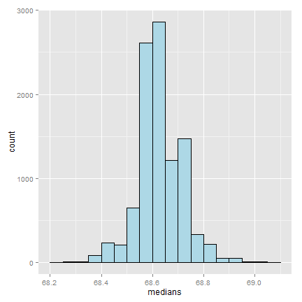

- The bootstrap is a tremendously useful tool for constructing confidence intervals and calculating standard errors for difficult statistics
- For example, how would one derive a confidence interval for the median?
- The bootstrap procedure follows from the so called bootstrap principle
Resampled inference
Statistical Inference
Brian Caffo, Jeff Leek, Roger Peng
Johns Hopkins Bloomberg School of Public Health
The bootstrap
Sample of 50 die rolls
## Error: there is no package called 'gridExtra'
## Error: could not find function "grid.arrange"
What if we only had one sample?
## Error: could not find function "grid.arrange"
Consider a data set
library(UsingR)
## Loading required package: MASS
## Loading required package: HistData
## Loading required package: Hmisc
## Loading required package: grid
## Loading required package: lattice
## Loading required package: survival
## Loading required package: splines
## Loading required package: Formula
##
## Attaching package: 'Hmisc'
##
## The following objects are masked from 'package:base':
##
## format.pval, round.POSIXt, trunc.POSIXt, units
##
## Loading required package: aplpack
## Loading required package: tcltk
## Loading required package: quantreg
## Loading required package: SparseM
##
## Attaching package: 'SparseM'
##
## The following object is masked from 'package:base':
##
## backsolve
##
##
## Attaching package: 'quantreg'
##
## The following object is masked from 'package:Hmisc':
##
## latex
##
## The following object is masked from 'package:survival':
##
## untangle.specials
##
##
## Attaching package: 'UsingR'
##
## The following object is masked from 'package:survival':
##
## cancer
##
## The following object is masked from 'package:ggplot2':
##
## movies
data(father.son)
x <- father.son$sheight
n <- length(x)
B <- 10000
resamples <- matrix(sample(x,
n * B,
replace = TRUE),
B, n)
resampledMedians <- apply(resamples, 1, median)
A plot of the histrogram of the resamples

The bootstrap principle
- Suppose that I have a statistic that estimates some population parameter, but I don't know its sampling distribution
- The bootstrap principle suggests using the distribution defined by the data to approximate its sampling distribution
The bootstrap in practice
- In practice, the bootstrap principle is always carried out using simulation
- We will cover only a few aspects of bootstrap resampling
The general procedure follows by first simulating complete data sets from the observed data with replacement
- This is approximately drawing from the sampling distribution of that statistic, at least as far as the data is able to approximate the true population distribution
Calculate the statistic for each simulated data set
Use the simulated statistics to either define a confidence interval or take the standard deviation to calculate a standard error
Nonparametric bootstrap algorithm example
Bootstrap procedure for calculating confidence interval for the median from a data set of \(n\) observations
i. Sample \(n\) observations with replacement from the observed data resulting in one simulated complete data set
ii. Take the median of the simulated data set
iii. Repeat these two steps \(B\) times, resulting in \(B\) simulated medians
iv. These medians are approximately drawn from the sampling distribution of the median of \(n\) observations; therefore we can
- Draw a histogram of them
- Calculate their standard deviation to estimate the standard error of the median
- Take the \(2.5^{th}\) and \(97.5^{th}\) percentiles as a confidence interval for the median
Example code
B <- 10000
resamples <- matrix(sample(x,
n * B,
replace = TRUE),
B, n)
medians <- apply(resamples, 1, median)
sd(medians)
## [1] 0.08424
quantile(medians, c(.025, .975))
## 2.5% 97.5%
## 68.43 68.81
Histogram of bootstrap resamples
g = ggplot(data.frame(medians = medians), aes(x = medians))
g = g + geom_histogram(color = "black", fill = "lightblue", binwidth = 0.05)
g

Notes on the bootstrap
- The bootstrap is non-parametric
- Better percentile bootstrap confidence intervals correct for bias
- There are lots of variations on bootstrap procedures; the book "An Introduction to the Bootstrap"" by Efron and Tibshirani is a great place to start for both bootstrap and jackknife information
Group comparisons
- Consider comparing two independent groups.
- Example, comparing sprays B and C

Permutation tests
- Consider the null hypothesis that the distribution of the observations from each group is the same
- Then, the group labels are irrelevant
- Consider a data frome with count and spray
- Permute the spray (group) labels
- Recalculate the statistic
- Mean difference in counts
- Geometric means
- T statistic
- Calculate the percentage of simulations where the simulated statistic was more extreme (toward the alternative) than the observed
Variations on permutation testing
| Data type | Statistic | Test name |
|---|---|---|
| Ranks | rank sum | rank sum test |
| Binary | hypergeometric prob | Fisher's exact test |
| Raw data | ordinary permutation test |
- Also, so-called randomization tests are exactly permutation tests, with a different motivation.
- For matched data, one can randomize the signs
- For ranks, this results in the signed rank test
- Permutation strategies work for regression as well
- Permuting a regressor of interest
- Permutation tests work very well in multivariate settings
Permutation test B v C
subdata <- InsectSprays[InsectSprays$spray %in% c("B", "C"),]
y <- subdata$count
group <- as.character(subdata$spray)
testStat <- function(w, g) mean(w[g == "B"]) - mean(w[g == "C"])
observedStat <- testStat(y, group)
permutations <- sapply(1 : 10000, function(i) testStat(y, sample(group)))
observedStat
## [1] 13.25
mean(permutations > observedStat)
## [1] 0
Histogram of permutations B v C